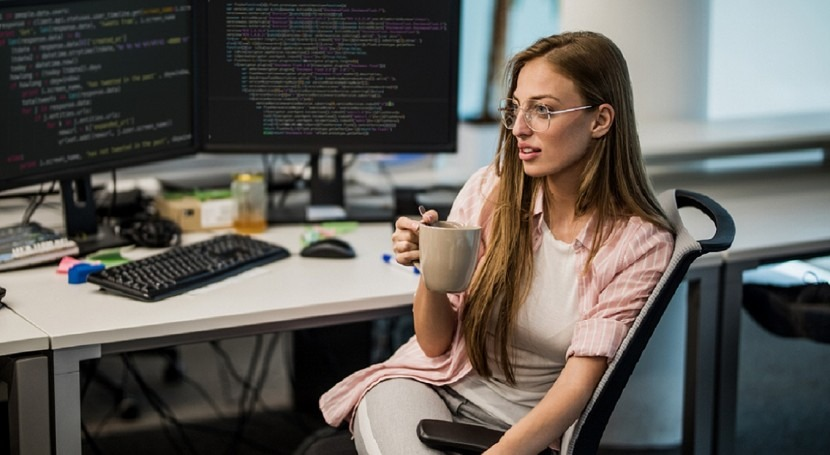

Juan Pérez es un desarrollador de software con más de 10 años de experiencia. Es experto en tecnologías como Java, JavaScript y Python.
María García

María García es una ingeniera de software con experiencia en desarrollo web y móvil. Es especialista en tecnologías como React, Angular y Flutter.
Pedro Sánchez
Pedro Sánchez es un científico de datos con experiencia en el uso de machine learning y deep learning. Es especialista en el análisis de datos y la visualización de información.
Programa
Martes, 1 de agosto
9:00 - 10:00 | Juan Pérez: "Desarrollo de aplicaciones Java"
10:00 - 11:00 | María García: "Desarrollo web con React"
Miércoles, 2 de agosto
9:00 - 10:00 | Pedro Sánchez: "Machine learning para la ciencia de datos"
10:00 - 11:00 | Mesa redonda sobre el futuro de la programación